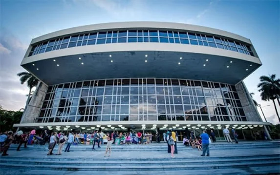
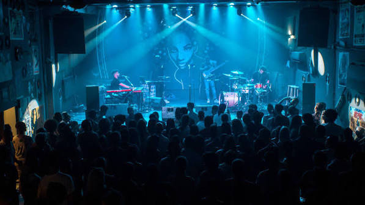
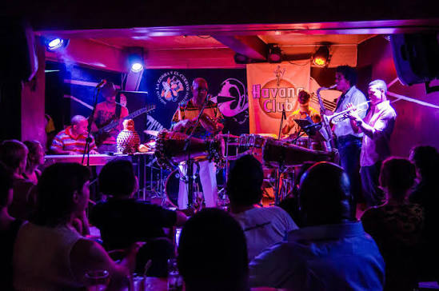
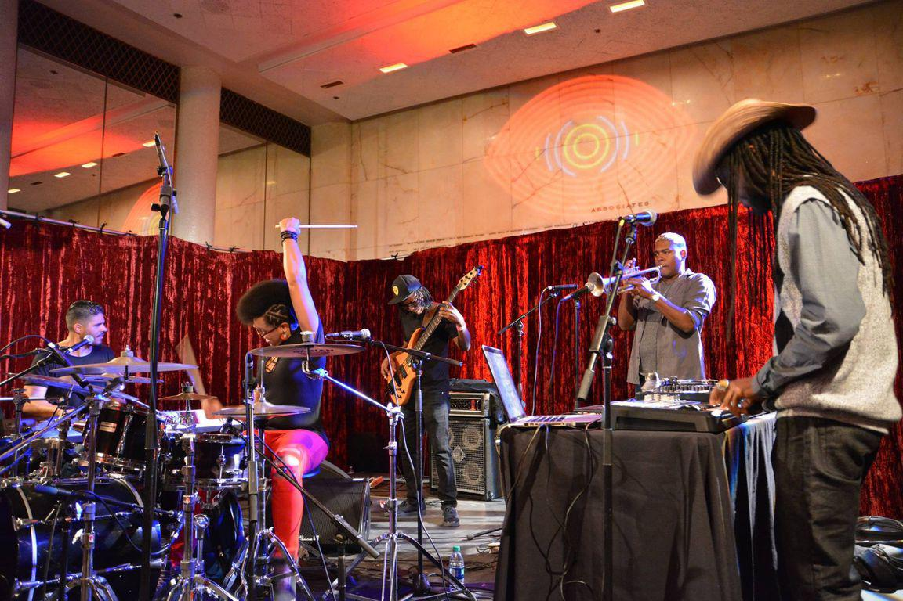

16 jours au rythme du Jazz Afro-Cubain
Un grand voyage de 16 jours construit autour du prestigieux Festival Jazz Plaza. De La Havane aux montagnes de Viñales, jusqu'aux ruelles coloniales de Trinidad, vivez une immersion totale dans la musique, l'histoire et les paysages de Cuba.
Le voyage en un coup d'œil

🎭 Théâtre National
- Galas et grands concerts
- Salles Avellaneda et Covarrubias
- Programmation prestigieuse

🎨 Fábrica de Arte
- Jazz contemporain et arts plastiques
- Lieu avant-gardiste unique
- Fusion culturelle totale

🦊 Clubs mythiques
- Jam sessions nocturnes
- Ambiance intime et authentique
- La Zorra y el Cuervo

🎵 Artistes de légende
- Frank Fernández, Roberto Fonseca
- Invités internationaux
- Colloque Leonardo Acosta
La Havane, berceau du Jazz
Entre ruelles coloniales et scènes mythiques, découvrez une ville où la musique coule dans les veines.
Votre itinéraire de 16 jours
Semaine 1 : La Havane & Festival (J1 à J8)
Arrivée à La Havane
Accueil à l'aéroport José Martí. Transfert en classic car et installation. Soirée libre pour une première immersion sur le Malecón.
Vieille Havane & Jazz
Visite de la Vieille Havane (UNESCO). Après-midi : premiers concerts off du festival dans les bars de la Plaza Vieja.
Le Vedado & Colloque
Matinée : Colloque International "Leonardo Acosta in Memoriam". Après-midi : quartier du Vedado. Soirée : concert d'ouverture au Théâtre National.
Festival & Fábrica de Arte
Journée dédiée au festival. Masterclasses l'après-midi. Soirée à la Fábrica de Arte Cubano (FAC) : jazz fusion et arts plastiques.
Journée libre & Clubs
Temps libre pour explorer les musées (Hemingway, Révolution). Soirée : jam session au mythique club La Zorra y el Cuervo.
Route vers Viñales
Départ vers l'ouest. Découverte de la vallée des mogotes (UNESCO). Installation dans une casa particular au cœur des plantations de tabac.
Viñales & Nature
Randonnée ou balade à cheval dans la vallée. Visite d'une ferme agro-écologique et d'une maison de torcedor (roulage de cigares).
Retour à La Havane
Retour vers la capitale. Soirée de salsa live dans un club de la Calle G. Le festival bat son plein.
Semaine 2 : Trinidad & Clôture (J9 à J16)
Route vers Trinidad
Longue route panoramique vers le centre de l'île. Arrêt à Cienfuegos (la perle du sud). Arrivée à Trinidad en fin de journée.
Trinidad UNESCO
Découverte de la ville coloniale : Plaza Mayor, Palacio Cantero, Casa de la Trova. Ambiance musicale permanente dans les rues.
Vallée de los Ingenios
Excursion dans la vallée sucrière. Tour Iznaga et déjeuner guajiro. Après-midi libre pour la plage de Ancón.
Retour vers La Havane
Route du retour. Arrêt à Santa Clara (mausolée du Che). Arrivée à La Havane en soirée.
Festival : Grande Soirée
Derniers grands concerts du Festival Jazz Plaza. Soirée de gala avec les artistes internationaux et cubains.
Hemingway & Santería
Visite de la Finca Vigía et du port de Cojímar. Après-midi : immersion culturelle (Santería ou atelier de rumba).
Derniers achats & Malecón
Foire artisanale de San José pour les souvenirs. Dernière balade sur le Malecón au coucher du soleil. Dîner d'adieu.
Départ
Petit-déjeuner cubain. Transfert à l'aéroport José Martí. Vol retour avec le jazz dans les oreilles.
Jazz & rythmes afro-cubains
Une fusion unique entre traditions cubaines et jazz international.
Informations pratiques
🛂 Formalités
- Passeport (6 mois)
- Carte de tourisme (Visa)
- Assurance santé obligatoire
💵 Monnaie
- Peso Cubain (CUP)
- Change en banque/Cadeca
- Prises US 110V/220V
🎒 Équipement
- Tenue de soirée pour les galas
- Chaussures confortables
- Adaptateur prise US
🎟️ Festival
- Pass festival inclus
- Accès prioritaire aux concerts
- Rencontres artistes
Bon séjour musical à Cuba !
16 jours · Festival Jazz Plaza · La Havane · Trinidad
Parlons de votre projet →